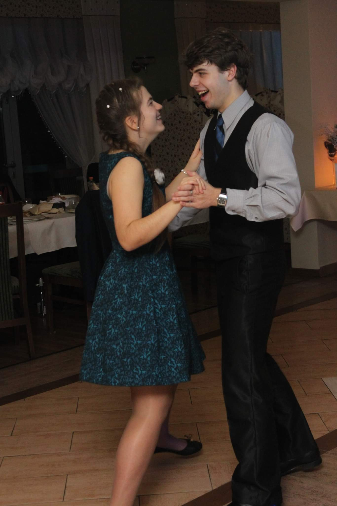
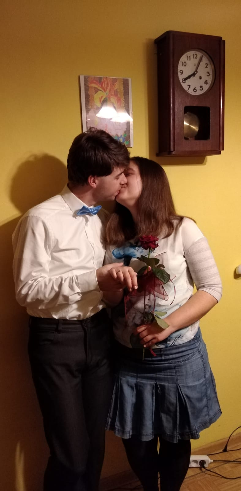
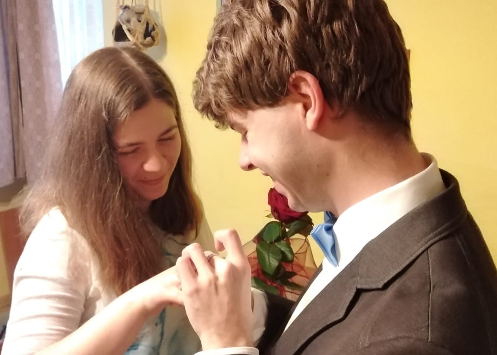

Spis treści
Strona główna
Jak dojadę?
Zamiast kwiatów
Lista prezentów
Zdjęcia i filmy
Spraw jeszcze kilka
Dodatkowe informacje organizacyjne
-
Gdyby ktoś zamierzał pozbyć się jakichś niepotrzebnych kubków czy tam
innej porcelany, to 11.12.2022 będziemy oboje w mieszkaniu przy ul.
Wróblewskiego 39 B/3 :D
-
Podczas mszy oprawa muzyczna, czytanie, psalm i modlitwa wiernych będą
ustawione i dogadane.
-
Po zakończeniu mszy i wyjściu księdza będziemy chcieli się jeszcze we
dwoje po cichu pomodlić przez ok. 5 min. – ale nie stresujcie się,
potem wyjdziemy efektownie z kościoła ;)
-
Gdyby ktoś chciał nas czymś obrzucać, to niech to będą drobne monety
albo płatki prawdziwych kwiatów – sztuczne płatki, serduszka, konfetti
itp. strasznie śmiecą, więc są bardzo niewskazane. Nie chcemy dokładać
roboty naszym kościelnym :)